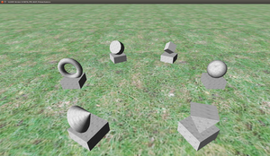
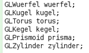

GLOOP
Dieser Artikel wurde für die folgenden Ubuntu-Versionen getestet:
Ubuntu 14.04 Trusty Tahr
Zum Verständnis dieses Artikels sind folgende Seiten hilfreich:
GLOOP ist eine Sammlung mehrere Bibliotheken, die mithilfe der didaktischen Entwicklungsumgebung BlueJ das objektorientierte Lernen von Java erleichtern sollen. Mit GLOOP lassen sich sehr einfach kleine Spiele in 3-dimensionalen Raum programmieren und anschließend spielen.  Das Programm wurde von Volker Quade (tätig in der Lehramtsausbildung für Informatik) entwickelt und die Lizenzen vom Land Nordrhein-Westfalen erworben. Die Autorenrechte blieben beim Autor, der die Bibliotheken aktiv weiterentwickelt. GLOOP ist nicht quell-offen.
In Nordrhein-Westfalen werden die GLOOP-Bibliotheken für den Einsatz im Fach Informatik in der Oberstufe empfohlen. Es wird durch ein umfassendes Begleitmaterial für die Oberstufe bereitgestellt.
Voraussetzung¶
Für die Nutzung von GLOOP müssen zwei Voraussetzungen erfüllt sein:
Installation eines Java Development Kit (JDK)
Import der Dateien¶
Herunterladen  der GLOOP-Bibliotheken von den Seiten der Bezirksregierung
der GLOOP-Bibliotheken von den Seiten der Bezirksregierung
Hinweis:
Der Download der Version 3.7 ist aktuell ist nicht auf allen Linux-Systemen lauffähig. Die in der Entwicklung befindliche Version 3.9 wurde schon erfolgreich getestet und sollte demnächst frei gegeben werden (Stand 08/2015)
Zum Import der GLOOP-Dateien in BlueJ bieten sich drei Wege an:
1. Weg: Import der Bibliotheken über BLueJ¶
BlueJ starten [2].
Klicken auf "Werkzeuge -> Einstellungen..."
unter dem Reiter "Bibliotheken" können einzelne Dateien über "Hinzufügen" ausgewählt und importiert werden
ein Neustart des Programms schließt den Import ab
Bedienung¶
|  |
| Deklaration von GLOOP-Objekten in BlueJ |
Nachdem die GLOOP-Bibliotheken in BlueJ importiert wurden, lassen sich die GLOOP-Klassen nutzen, sofern sie in eine beliebige Klasse eingebunden werden. Die geschieht über den Befehl:
1 | import GLOOP.*; |
Bei der Deklarierung eines Objektes aus den GLOOP-internen Klassen wird ein einheitliches Format verfolgt: Zunächst wird das Kürzel "GL..." vorangestellt und mit einer typischen Beschreibung eines Körpers (z.B Kugel) ergänzt: GLKugel (siehe Bild rechts).
Die Dokumentation zu GLOOP
 findet man auf Seiten der Landesregierung.
findet man auf Seiten der Landesregierung.Zum Einsatz von GLOOP im Unterricht wird ebenfalls ausführliches Unterrichtsmaterial
auf Seiten der Landesregierung bereitgestellt (siehe unter Ergänzungsmaterialien).
Problembehebung¶
Werden in einem Projekt Schriftzeichen über ein Objekt der Klasse GLTafel verwendet, so muss zuvor die Datei Zeichen.png in das jeweilige Projektverzeichnis kopiert werden (befindet sich in der Installationsdatei);
Laut Autor arbeitet das Programm besser mit dem JDK von Oracle als dem OpenJDK zusammen - bisher gibt es aber keine bekannten Probleme.
- Erstellt mit Inyoka
-
 2004 – 2017 ubuntuusers.de • Einige Rechte vorbehalten
2004 – 2017 ubuntuusers.de • Einige Rechte vorbehalten
Lizenz • Kontakt • Datenschutz • Impressum • Serverstatus -
Serverhousing gespendet von